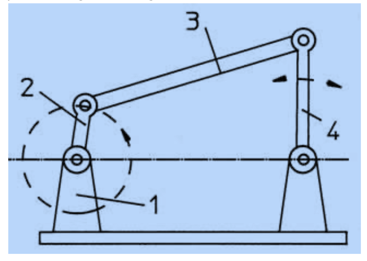
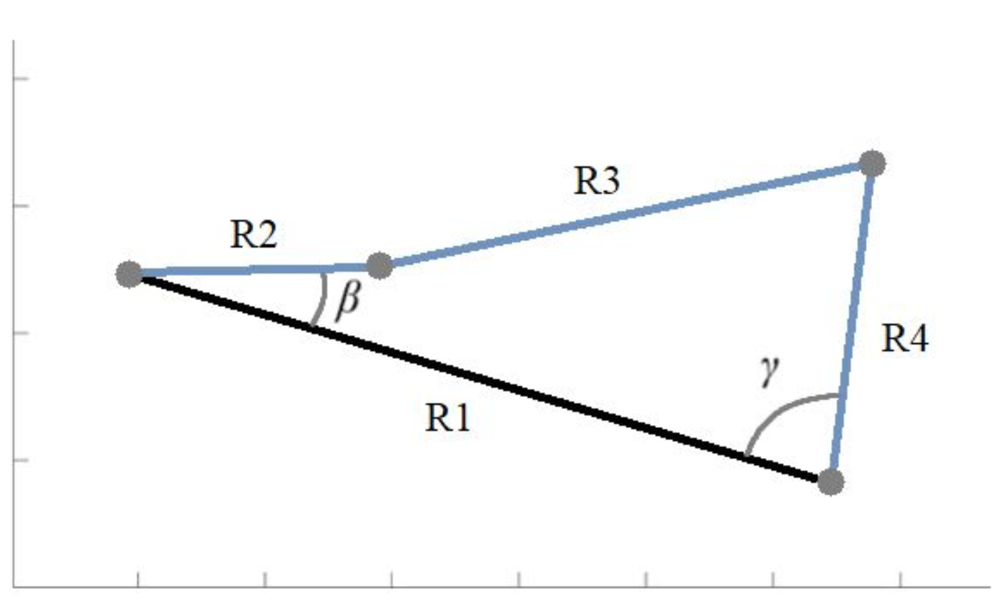
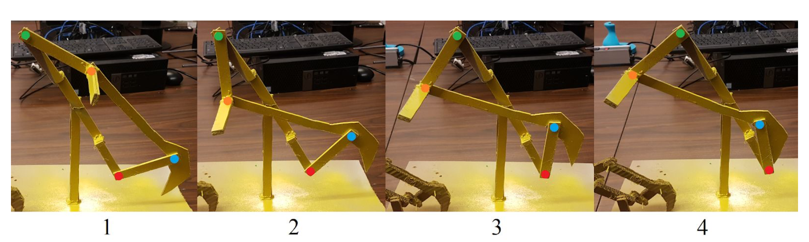

Overview
A four-bar mechanism is a mechanical system consisting of four bodies connected at four pivot points: the frame, input, coupler, and follower. The objective of this project was to design a four-bar mechanism for a real-life application—ergonomic gardening for the elderly.

Problem Statement
- Gardening can be strenuous for the elderly due to repetitive bending and awkward postures
- Need for a mechanism to assist with gardening tasks and reduce physical strain
- Design must be simple, reliable, and easy to manufacture
Solution
- Determine 4 critical precision points of the desired motion

- Determine the rotation angle (beta, gamma) of the input and follower links through each precision point

- Utilize the function generation algorithm to solve for link lengths and displacements

Technical Implementation
- Precision point selection for desired end-effector path
- Function generation and kinematic synthesis
- CAD modeling and prototype visualization

Results & Impact
- Developed a working four-bar mechanism prototype for ergonomic gardening
- Validated motion through precision points and function generation
- Demonstrated improved accessibility and reduced physical strain
Lessons Learned
- Importance of precision point selection in mechanism design
- Function generation is a powerful tool for kinematic synthesis
- Iterative design and prototyping are key to successful mechanism development